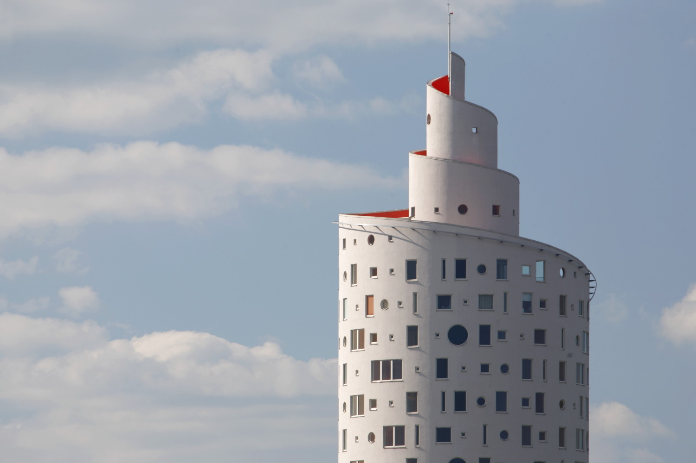

Tigutorn
Mis on tigutorn?
Tigutorn on üks ebatavaline arhitektuurne nähtus, mis tähendab "tigude torni" eesti keeles.
See on väike ehitatud struktuur, mis on mõeldud tigudele koduks või peatuspaigaks.
Tigutornide eesmärk on aidata tigudel ohutult ja lihtsalt liikuda aias ning samal ajal aidata aiaomanikul tigusid kontrollida.
Tavaliselt on tigutorn valmistatud puidust või kivist ning sellel on spiraalne või keerdunud kujundus, mis loob tigudele ronimiseks ja varjuks sobiva keskkonna.
Torni spiraalne disain võimaldab tigudel ronida üles ja leida varju, mis võib olla kasulik kuuma ilmaga või vihma ajal.
Tigutornid on huvitavad aiakujunduse elemendid ning need on populaarsed eriti aedades, kus on palju tigusid.
Tasuta Õlle
Kus saab rohkem infot Tigutorni kohta?
Viirus

Kes elavad tigutornis
Mina
Sina
Teie
| Vihm |
Tuli |
Maa |
| Seitse |
Kass |
Koer |
| söö |
Palveta |
Armasta |